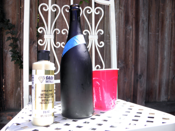
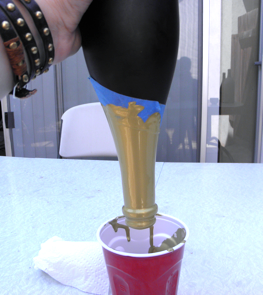
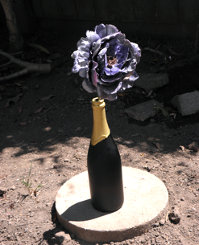

8-20-2012
Dipped Wine Bottle

If your anything like me, you probably have a few wine, champagne, or alcohol bottles going into the recycling each month. My husband and i just celebrated our two year wedding anniversary and we bought a bottle of champagne. The bottle itself was cool - it had already been treated so it had a matte black color, but adding a pop of gold made it functional as a gorgeous indoor or outdoor decoration. So instead of sending those bottles out, reuse them in your own home by following the easy steps below.
What You Will Need:
- Wine Bottle
- Acrylic Paint
- Painters Tape
- Disposable Cup
- Small Cup with Warm Soapy Water
- Q-tips
Directions:
Take your acrylic paint and pour it into your disposable cup. I filled the Solo cup about 1/4 of the way up.

Use the painters tape on the wine bottle to tape off where you want the paint to stop. Then take your bottle and place it into the disposable cup. Tilt the disposable cup to get the paint on all parts of the bottle you want covered. Pull the bottle out of the disposable cup and allow excess paint to drip off.
Once the paint has stopped dripping allow paint to partially dry. After about 15 minutes remove the painters tape. Use the warm soapy water and a q-tip to clean up the edges and remove paint from anywhere you do not want it to be. At this point if you do not like how it turned out you can wash the whole bottle with water to remove the paint and start over. Pour the excess paint from the cup back into the paint container.
Once the paint has fully dried you can use your bottle indoors or outdoors to add a touch of upcycled personality to your home! Enjoy, be inspired, and go out and create some upcycled beauty for your home!

Click Here for more great craft ideas!